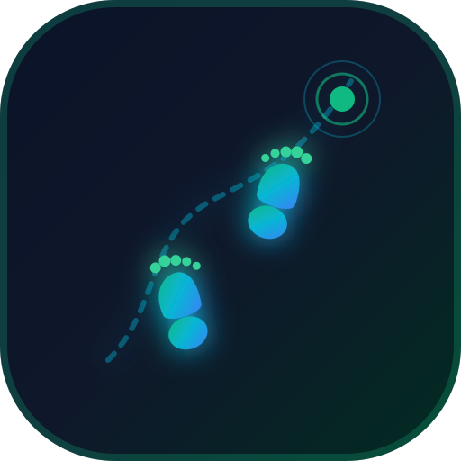

Csámpázó
SétakövetőMentett Útvonalak
Válaszd ki az elemezni vagy menteni kívánt sétát
Kiválasztott Séta
Részletes másodperc alapú kimutatás és térkép
🔬 Másodperc Alapú Idő- és Mozgáskimutatások
⚡ Sebesség a Séta Alatt (Színkódolt Vonal)
Átlag: 0.0 km/h📐 Mért Lépéshossz & SM Járásdinamika Elemzés
Mért átlag: —Az SM-ben a lépéshossz folyamatosan változó érték (nem fix konstans): a valós távolság és lépésszám arányából pontosan mérve, a fáradás és járásbiztonság kimutatásához.
⏱️ Másodperc Alapú Esemény-Idővonal (Visszanézés)
Összesen: 0 másodperc📍 Útpont Kezelés
Padok, ivókutak, akadálymentes helyek és egyéni megállók kezelése
⚙️ SM Rehabilitációs & Séta Beállítások
📈 Fejlődés, Fitness & Szintlépéses Rendszer
🪜 Szintlépési Mérföldkő Létra
Testreszabható rehabilitációs célok🛠️ Saját Szintek Testreszabása
💾 Adatkezelés: Import & Export
📄 TXT Napló Export
Minden mentett séta és útpont letöltése standard szöveges formátumban (csampazo_naplo.txt).
📥 Útvonal / GPX / TXT Import
Korábbi mentett csampazo_naplo.txt vagy GPX fájl betöltése és kiértékelése a térképen.
🗺️ GPX Export & Fájlkezelés
Minden útvonal és útpont mentése a Download/csampazo mappába nemzetközi GPX formátumban.
🔄 Helyi Szerver Szinkron
Azonnali szinkronizáció a helyi háttérszerverrel (localhost:8085 API).
Google Drive Szinkronizáció (Android ↔ PC)
Nézd meg a számítógépen a telefonon rögzített sétáidat!Töltsd le közvetlenül a legújabb Android telepítőfájlt a telefonodra vagy a számítógépedre, majd nyisd meg a mobilon a telepítéshez!
⬇️ csampazo.apk Letöltése (Közvetlen Telepítő)🎮 Demo / Minta Mód
Minta séták megjelenítése. Alapból kikapcsolva.
🧹 Összes Adat Kitakarítása
Kitörli az összes rögzített sétát és saját útpontot a telefon memóriájából.